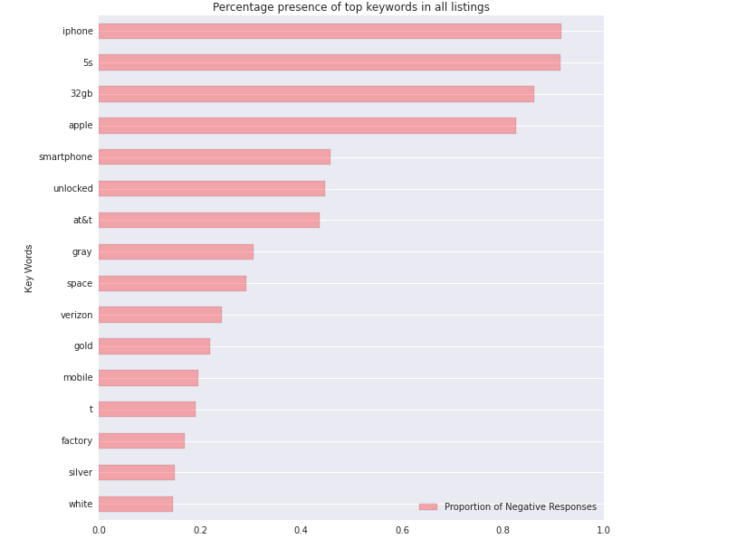
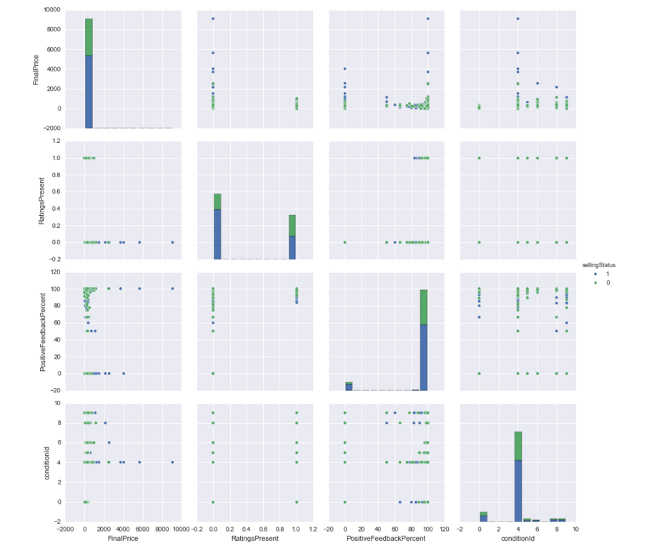
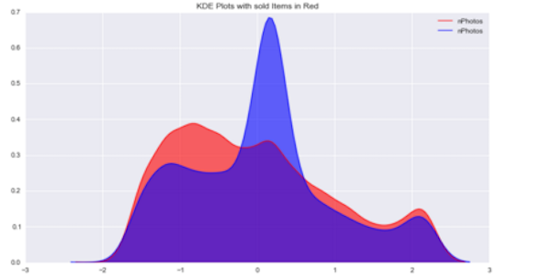
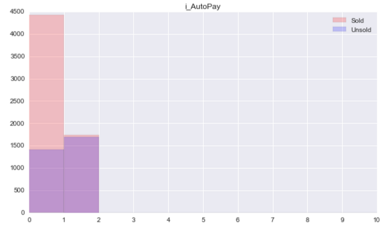
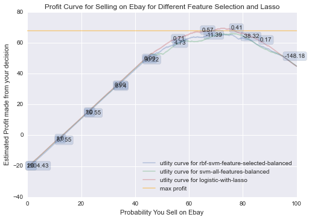

Screencast:

Project Overview
Motivation
eBay is one of the largest online markets for individual transactions outside of multi-person companies. One of those individuals interacting with this virtual marketplace is Michael’s mother, and she’d like to use it better! Judging from the variety and ostensible randomness of the type and structure of people’s product listings, it is clear that few people approach their listing with a strategy that is more complex than just picking a starting bid price. In fact, there are a seemingly endless number of factors that a user has control over when making a listing that can potentially influence the bidder/buyer. We would like to explore what those factors are - from seller feedback info, number of pictures, etc - and see what combination of them is best to make a successful auction.
Goals
Our initial goal was to determine what factors a seller could use in creating the auction to increase the chances of successfully selling the item and maximizing profit. However, this goal changed as we worked on the project. We were able to determine some indicators of what influences an auction's success rate, but instead of predicting how accurate these indicators are for determining success rate, we decided to shift gears and predict whether it would be more profitable to sell items on eBay or if it was more profitable to sell the item to other sources (such as Apple, AT&T, Verizon, etc.).
Data Gathering and Cleaning
Using eBay's API, we gathered data on completed auctions and the auction's seller's profile information. eBay has a huge database, so we specified that the only auctions we were going to focus on were ones that were selling iPhone 5s phones with 32GB. We didn't have to worry about prices changing with different time periods, because grabbing data from eBay is limited to the most recent data, so the prices are all about the same. We also made sure to clean our data to only get values that we thought were useful. For example, information about the different bidders wasn't relevant information to us, because from a seller's perspective, they would have no control over the types of bidders that bid on their auction.
Data Analysis
The title of the auction is one of the few things that sellers can personalize in an auction. We wanted to see whether there was a correspondence between certain words and the success of auctions. Along with the standard words that people use to describe their item (iPhone, 5s, 32gb, Apple, smartphone), a significant proportion of successful auctions also had words describing the color of the phone (space gray, gold, silver), and what phone carrier it belonged to (AT&T, Verizon).

Interestingly enough, although the word "unlocked" contributed to both successful auctions and unsuccessful auctions, a larger proportion of unsuccessful auctions had the word "unlocked" than successful auctions. Unlocked phones are phones that can be used on any cellular network, which seems like it should be more appealing to buyers in general. 
For the graph below, we can see that very few people have a positive feedback percent in the range between 0 and 100, and that most of the ratings are either near 0% or near 100%. This tells us that very few eBay sellers are polarizing - either they are consistently bad or good, or some of those near 0% and 100% haven't sold many items so their small sample size naturally condones something near 0% or 100%. Everyone with a 0% positive feedback rating, irregardless of item condition, did not successfully sell their item. The vast majority of people also have positive feedback, which is good for worldly morality! Interestingly, while overall our data frame is split ~65% sold 35% didn't sell, when people made their ratings present, a larger portion of them failed to sell. 
We used a series of Kernel Density plots to look at the non-indicator data with a wide range of values. The graph below focuses on the nPhotos data. Since this data is standardized, its interesting to note that there is a peak in the middle, which tells us a large proportion of unsuccessful auctions also have an average amount of photos added. This graph suggests that having an average number of photos contributes to an unsuccessful auction. 
We then used a series of binary plots for our indicator data. The graph below focuses on the autoPay data, where we can see that while having autoPay is most common (the majority of histogram values are in the 1 bin), the distribution of sold or not sold moves much more heavily toward not sold when autoPay isn't an option (bin 0). 
Predictions
For our predictions, we move to a different problem, of whether selling on eBay would be more profitable than selling elsewhere. To make these predictions, we first created a cost matrix, keeping in mind the cost to list an eBay auction and the average price of selling an iPhone 5s outside of eBay. We create SVM classifiers and try to improve them with feature selection, and also compare with regressions such as logistic with lasso to determine which performs the best.
The graph below is a profit curve for that shows that the logistic with lasso does the best in the end. The x-axis on this plot tells us what expected profit would be at each probability of selling your iPhone 5s 32gb on eBay. We see that at around 75% probability of selling eBay, maximum predicted profit can occur, at a value of around $70. Moreover, everywhere above a probability around 13% results in a predicted positive profit, and at 100% probability of selling on eBay, a large profit (about 60% of the max) is expected to be received. Seems pretty sensible to list it on eBay, then! That dip starting at around 75% probability comes from opportunity costs and listing costs.
